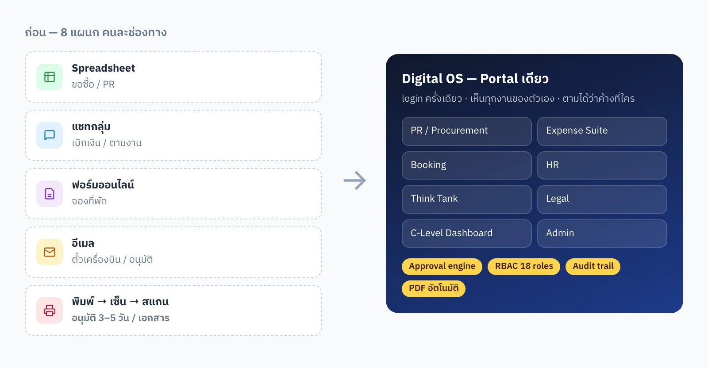
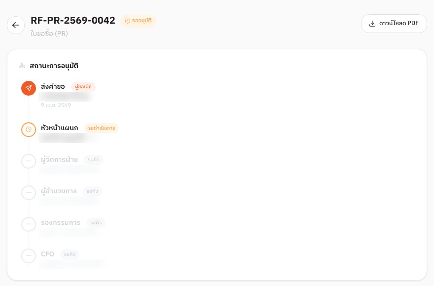
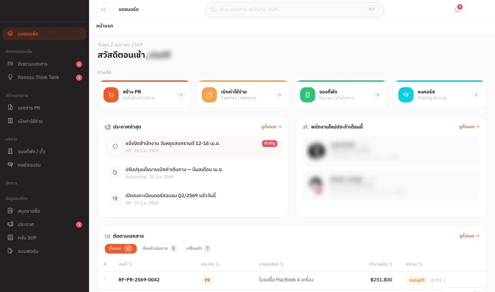
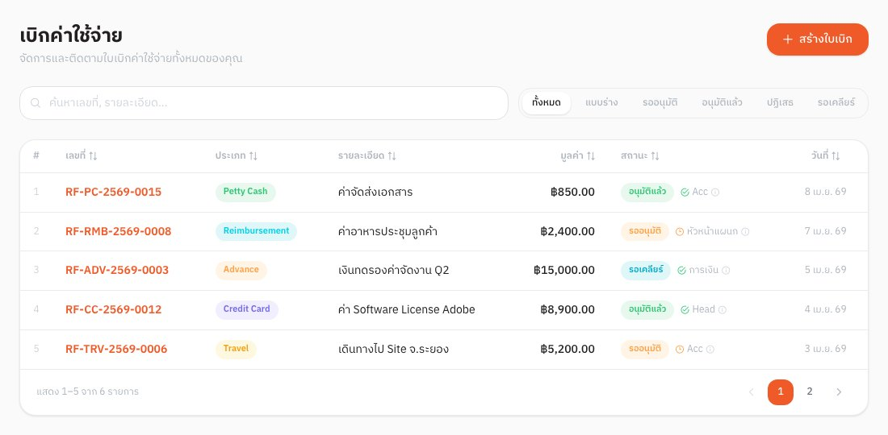
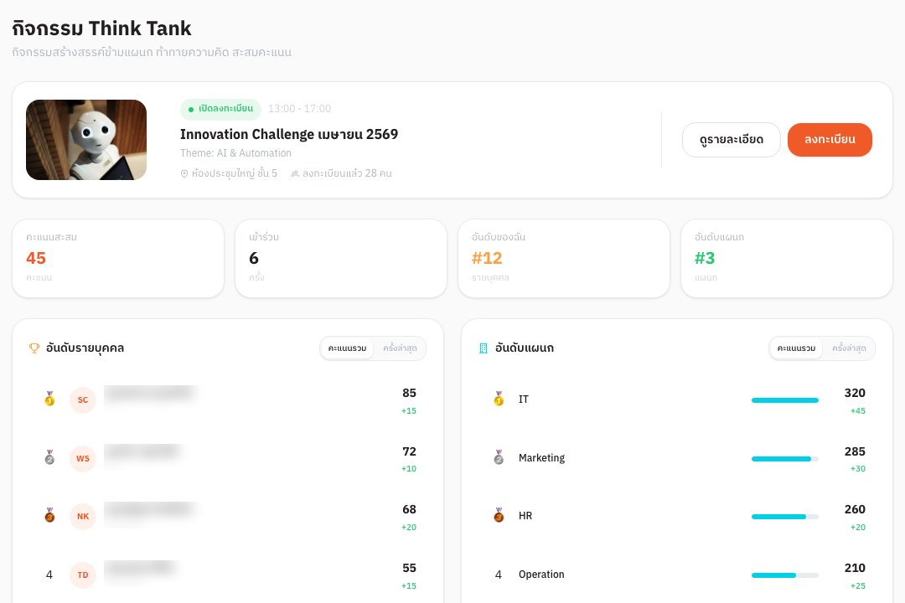
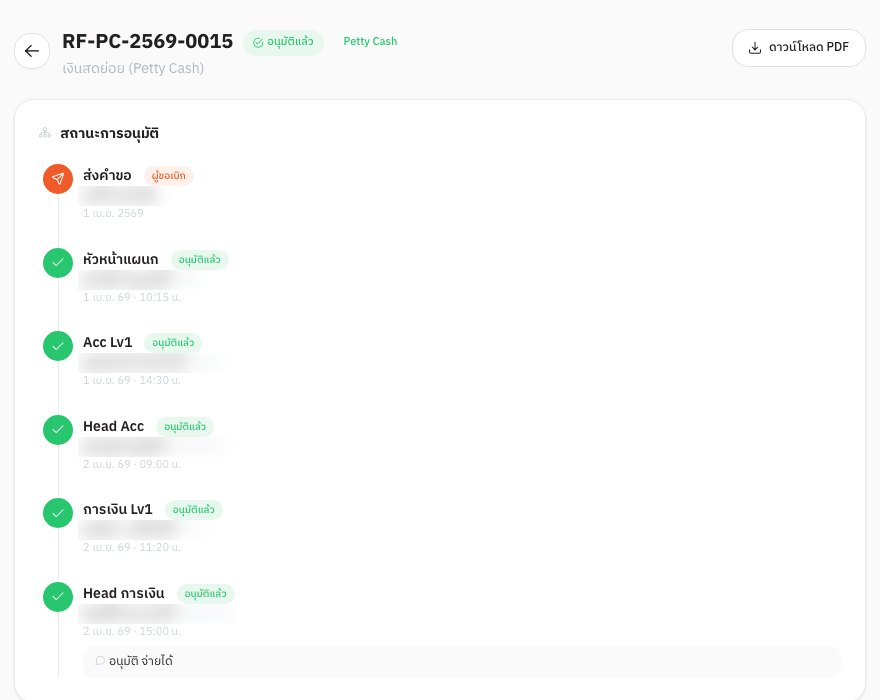
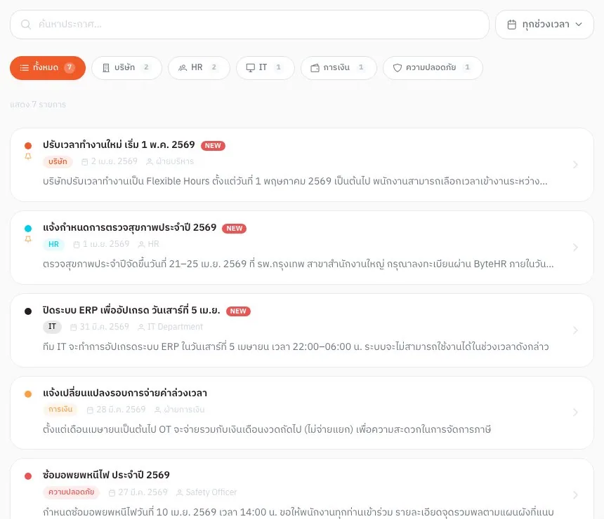
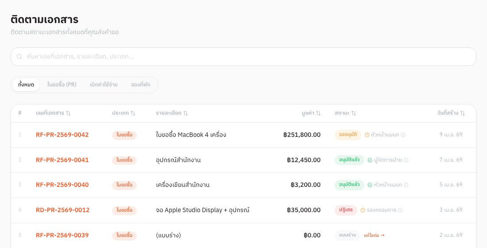

Digital OS for a group of companies
Digital OS brings 8 departments into one system — designed to scale in user count, role hierarchy and international markets, with a design system, RBAC and bilingual i18n from day one

An internal portal that brings Real Factory's 8 departments into one system — from documents scattered across Excel, LINE and email to a single source of truth
The problem
Why does a group of companies need its own Digital OS?

8 departments each used their own set of tools — purchase requests in Excel, expense claims in LINE, accommodation bookings in Google Forms, flight tickets over email. The approval cycle took 3–5 days per document and nobody could see the big picture. Management didn't even know whose desk a request was stuck on.
8 departments on separate tools, no one sees the whole picture
Purchase requests in Excel, expense claims in LINE, bookings in Google Forms, flight tickets over email — no single source of truth, no way to tell which stage a document is at
A 3–5 day approval cycle per document
Documents had to be printed → signed → scanned → passed on. Management couldn't see who was holding things up, and overdue items went unresolved — affecting plans across the whole company
No audit trail — nothing to trace back
Who approved, who rejected and why, whether spending went over budget — none of it was recorded. Every audit turned into a document hunt
Every PDF made by hand
Open Word, fill in the numbers → export PDF → print → sign with a pen → scan it back — slow, error-prone, with no standard layout
15+ user roles with different permissions
Role checks hardcoded across the codebase — adding a single new role meant editing every page. Not maintainable as the company grows
The solution
One portal — a Digital OS pattern that serves every department at once

One portal for every request type
PR/PO, expenses, bookings, HR requests — all in one portal, one source of truth. Users log in once and see all of their own tasks
A configurable approval engine
One central state machine handles chains like M3→E1→E2→E3→CEO based on amount — each doc type and department configures its own, no new code needed
Real-time status via Socket.io
Requesters see right away who has their request, and management sees an "overdue" dashboard in real time — follow-ups in LINE dropped by more than 80%
A reusable document PDF component
Voucher + signature block + attachment index = shared components that work for every doc type, no duplicated layouts
RBAC with 18 roles and separate approval levels
M3/E1/E2/E3, Finance Lv1/Head, Acc Lv1/Head, Procurement Manager + Reviewer and more — mirrors the real org chart, configured through a permissions matrix
Bilingual TH/EN i18n from day one
Every string goes through the useLocale composable with a type-safe LocaleKey, ready for expansion abroad without a refactor
Architecture Overview
Vue 3 + Express + Prisma — Modern stack, shared types, single source of truth

What I built — 8 modules
Phase 1 MVP — Core Platform + 7 Functional Modules


PR / Procurement
Purchase Request + PO with approval chain (M3→E1→E2→E3→CEO by amount) + supplier comparison
Expense Suite
Petty Cash, Reimbursement, Advance + Clear, Credit Card OCR, Travel — 5 sub-flows + WHT 1/2/3/5%
Booking
Accommodation (HR confirms from the company voucher pool) + flight tickets (HR attaches the e-ticket)
HR
Employee Directory, Vehicle Registry, Course Library, Form Templates, Announcements
Think Tank
Engagement activities + leaderboard + scoring by C-level, with result reports
Legal
Knowledge Base + AI Chat (Phase 1: Legal Admin only) — collects contracts and internal legal references
C-Level Dashboard
Pending approvals, Budget vs Actual, Approval Bottleneck, Department Ranking, Spending Trend
Admin
Permissions Matrix (18 roles × all routes), workflow config, system settings — change permissions without a deploy
Hacks for hard problems
6 challenges that weren't in any playbook — I had to work out the workarounds myself

RBAC: splitting 11 roles into 18
The PRD specified 15 roles, but the codebase had collapsed them into 11 → approval thresholds didn't match the real org chart. People who should see a document couldn't, and people who shouldn't could
Document PDFs that scale to 8 doc types
8 doc types × signature block × attachment index × a need for real PDF merging (text-selectable) — duplicating the layout per doc would be a maintenance nightmare
components/document/* (SignatureBlock, AttachmentIndex, AttachmentPage) + pdf-lib to merge real PDF bytes at the end + html2canvas for image-only attachments — one abstraction for every docProject-wide i18n in one sprint
~50 views, 1,000+ strings, and strict TH/EN parity (a missing key on either side breaks the build) — no way to do it by hand alone in time
useLocale composable (zero dependencies, type-safe via a LocaleKey union) + batches delegated to 10 subagents + an automatic type-check on every batch before commit → TH/EN parity enforced by TypeScript, not disciplineA login page that fought dark mode
The app supports dark mode everywhere, but the login page is a brand experience that has to stay white with a dark brand panel — the token cascade kept flipping its colors when dark mode was on
.login-light-scope pattern that locks token values inside a CSS scope; the brand panel hardcodes #231F20 + an !important rule to block cascade overrides; SplashScreen reuses the same patternApproval Bottleneck Real-time
C-level wanted to see whose desk a request was on, which step of the chain, and for how long — and refreshing the page wasn't fast enough
100% design tokens — stopping drift before it starts
Tailwind v4 + PrimeVue Aura theme + custom tokens — 3 layers that can override each other. Without rules, hardcoded hex values keep sneaking in
design-tokens.css as the single source of truth; dark mode flips via :root.dark-mode overrides — no Tailwind dark: variants neededStakeholders & Build Period
An internal product — co-designed with the real team in every department

Digital OS wasn't designed from an ivory tower — every flow went through workshops with the actual HR, Finance, Accounting, Procurement, Legal and C-level teams, and every approval threshold comes from Real Factory's actual policy
Real Factory Group
Client + production team — stakeholders from 8 departments
Build Period
6 weeks — Phase 1 MVP (Core + 7 modules)
Team Composition
TechLead, PM×2, BA, UX/UI — cross-functional small team
AI-Augmented Workflow
BMAD framework + Claude subagents for i18n and create-story
Internal users can't leave — if it's mandated, they have to use it. But if the design misses their real pain points, they'll find a workaround and go back to Excel. Co-design means every approval rule, every field and every label comes from real domain experts, not assumptions
Key Takeaways
4 design thinking lessons from Digital OS

At first I used the 11 roles the codebase already had. When I tested with the actual Head of Finance, he said, "I'm not Lv1, I'm the Head — why do I see the same documents as Lv1?" That's when I realized roles have to reflect the real hierarchy, not be reduced to make things easier for developers. In the end I split them into 18 roles, and approvals now match company policy exactly
If one constant lives in 3 places, it will drift — not "if" but "when". Digital OS forces every type, every validation and every label to come from a single source → the frontend and backend can't fall out of sync, and tokens and components can't contradict each other
SignatureBlock + AttachmentIndex + AttachmentPage + DocumentLayout — just 4 components with one prop interface generate 8 doc types (PR, PO, Petty Cash, Reimbursement, Advance, Clear, Travel, Booking). Duplicating per doc would mean 8× the maintenance — composition beats duplication every time
Translating file by file, string by string, is a nightmare — so I ran 10 Claude subagents in parallel, each taking a batch of views, with an automatic type-check guard before commit. If a key is missing, TypeScript fails immediately — no reliance on human discipline. The point is to design guards a machine can check, not a checklist in Notion